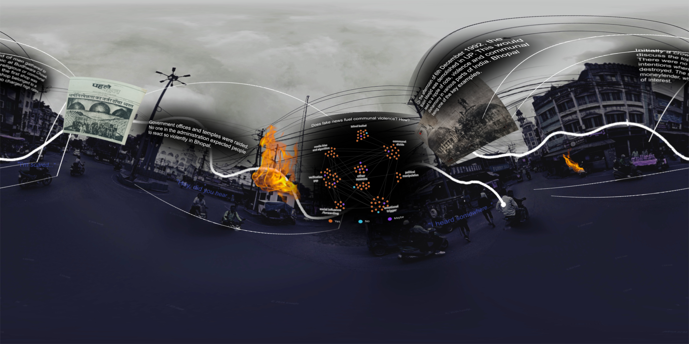

<script>
  // This script waits for the camera to load and slows down the rotation speed
  AFRAME.registerComponent('slow-load', {
    init: function () {
      this.el.setAttribute('look-controls', {
        magicWindowTrackingEnabled: false,
        mouseEnabled: true
      });
    }
  });
</script>
<a-scene>
  <a-assets>
    
  </a-assets>

  <a-sky src="#museum-pano" radius="5000" rotation="0 -90 0"></a-sky>

  <a-entity id="rig" position="0 0 0">
 <a-camera look-controls="pointerLockEnabled: true; magicWindowTrackingEnabled: false; touchEnabled: true">
  <a-cursor></a-cursor> 
</a-camera>
  </a-entity>
</a-scene>
